Загрузка расценок

На этом уроке научимся добавлять расценки в нашу смету.
Основные настройки параметров сделали, начинаем формировать смету – вставляем расценки, соответствующие нашему набору работ. В данном примере необходимо сделать фундамент под вольер для собак размером 2х4м2, фундамент – монолитная жб плита толщиной 100 мм по уплотненному песчаному основанию толщиной 150мм.
Подбираем необходимые нам расценки:
Вкладка База – ФСНБ 2022 (с Изм. 1-15) – ГЭСН - Строительные работы (откуда мы взяли базу? – все просто! Она добавляется по подписке при приобретении ПК ГРАНД-Смета. С чего бы это именно эта база? Потому что она соответствует текущему моменту, а именно 3 кварталу 2025 года, во втором квартале 2025 это была ФСНБ 2022 (с Изм. 1-14), в 4 квартале, соответственно, будет ФСНБ 2022 (с Изм. 1-16) и т.д.)
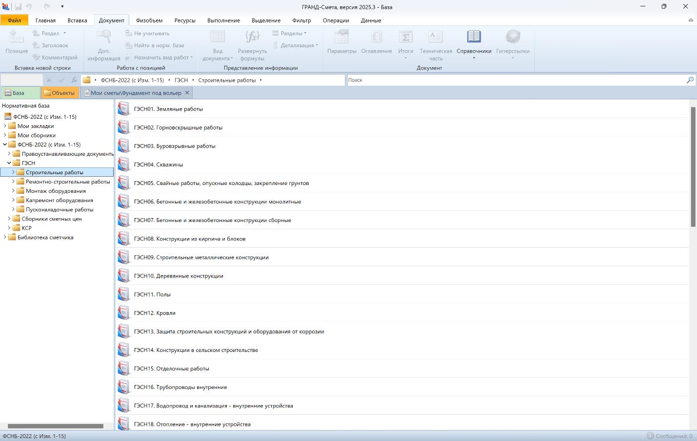
В строке поиск вбиваем необходимые нам работы – разработка грунта вручную без крепления, можно вводить сокращенные названия и выбрать из предоставленного списка необходимую расценку
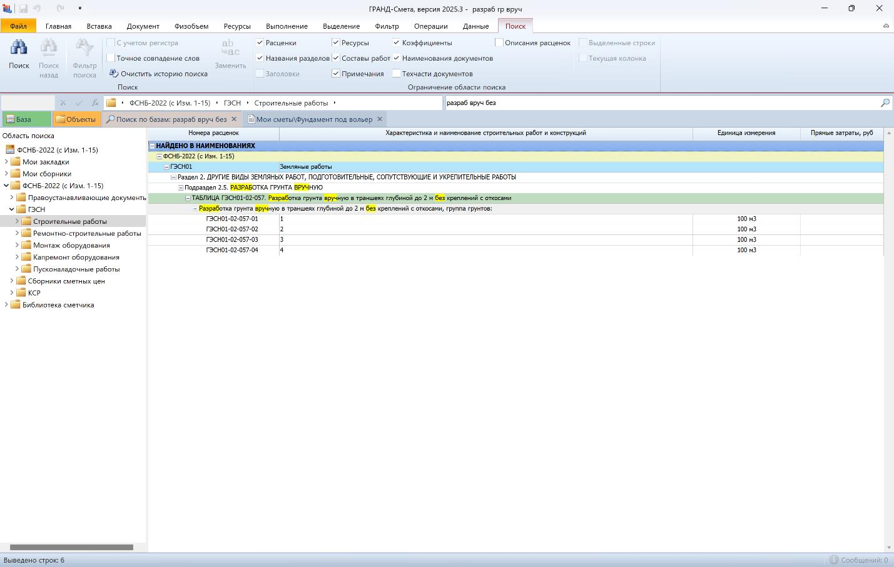
Нажимаем кликаем по нужной нам расценке правой кнопкой мышки, нажимаем вставить в смету.
Почему именно эту расценку выбираем? Все банально, есть классификация грунтов согласно ГОСТ 25100-2011 «Грунты. Классификация»:
Группа грунтов 1 включает легко разрабатываемые материалы: растительный слой, торф без корней, рыхлые пески, супеси и лессовидные суглинки. Грунт 1 группы что это такое — это материалы с плотностью 1200-1700 кг/м³, которые можно разрабатывать без предварительного рыхления с использованием траншейных агрегатов и грунторезов.
Группа грунтов 2 объединяет материалы средней сложности разработки: плотные пески, глины средней плотности, мерзлые грунты после предварительного разрыхления. Группа грунтов 1 и 2 отличие в смете заключается в различных расценках на производство земляных работ и требованиях к используемой технике.
Группа грунтов 3 включает сложные для разработки материалы: жирные глины с примесями, тяжелые ломовые глины, сцементированный строительный мусор. Грунт 3 группы это какой грунт — материалы с высокой плотностью до 1950 кг/м³, требующие применения мощной техники.
Группа грунтов 4 представлена очень твердыми материалами: твердые глины, мягкий гипс, скальные грунты после предварительного разрыхления. 4 группа грунтов характеризуется плотностью до 2200 кг/м³ и требует специальных методов разработки.
Группа грунтов 5 включает мерзлые глинистые и суглинистые грунты с плотностью до 1850 кг/м³. Эти материалы требуют предварительного оттаивания или разрыхления перед разработкой.
Чаще всего в центральной части нашей страны встречается именно вторая группа грунта, поэтому применяем соответствующую ей расценку. Однако для точного определения группы грунта необходимы геологические изыскания, которые, в свою очередь, осуществляются на стадии сбора данных при подготовке проектной документации и, соответственно, там указываются.
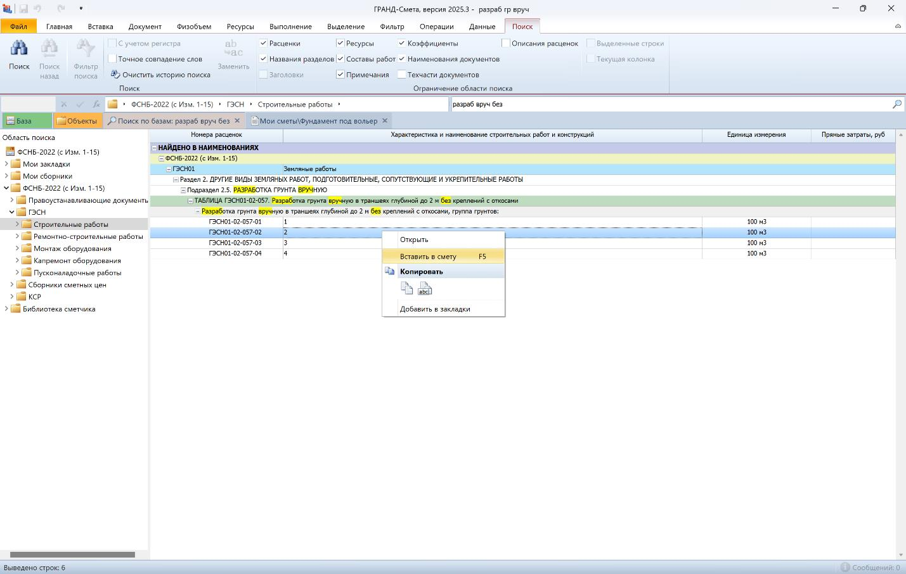
Ага, система ругается, ибо смета изначально создана в базе ФСНБ 2022 (с Изм. 1-14), а у нас открыта ФСНБ 2022 (с Изм. 1-15)… Не пугаемся, нажимаем продолжить, расценка вставлена.
Как сменить базу, расскажу в следующем уроке.
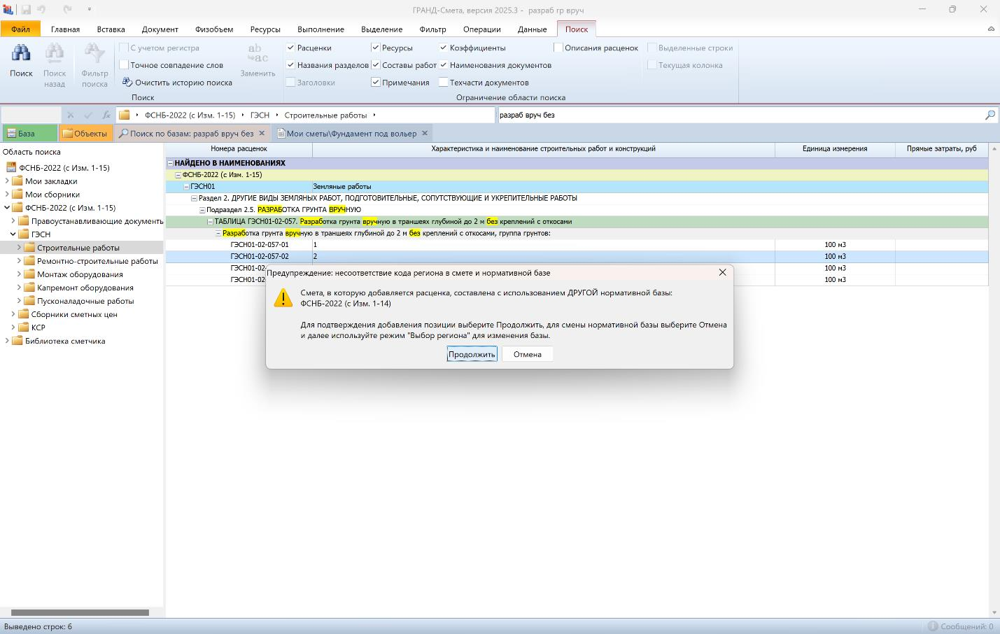
Переходим во вкладку открытой сметы и указываем необходимый нам объем, либо формулой подсчета объема, либо готовым числовым выражением, любезно нам предоставленном коллегами из ПТО в ведомости объема работ.
Обращаю внимание, если в графу с объемом перед формулой знак «=», то объем будет приведен в соответствие с единицей изменения по расценке.
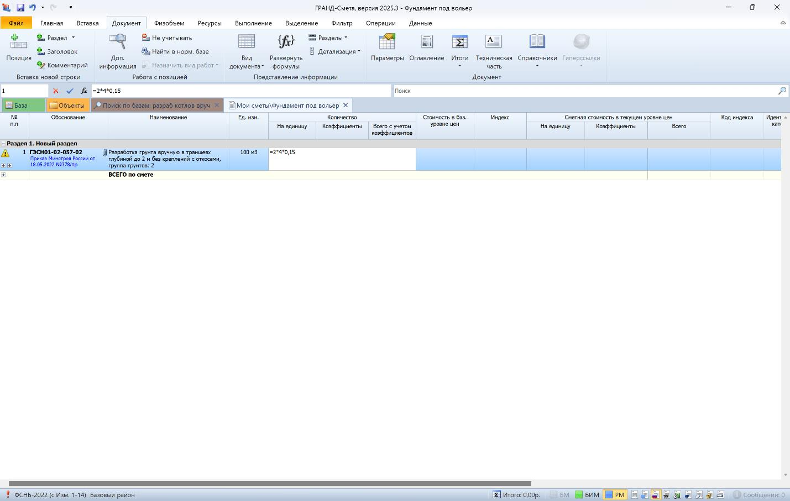
Добавим следующую расценку!
Вкладка БАЗА – Строительные работы – в строке поиска сокращенно вводим что ищем – Enter – из представленного списка выбираем нам подходящее – наводим курсор мыши – клик правой кнопкой – вставить в смету
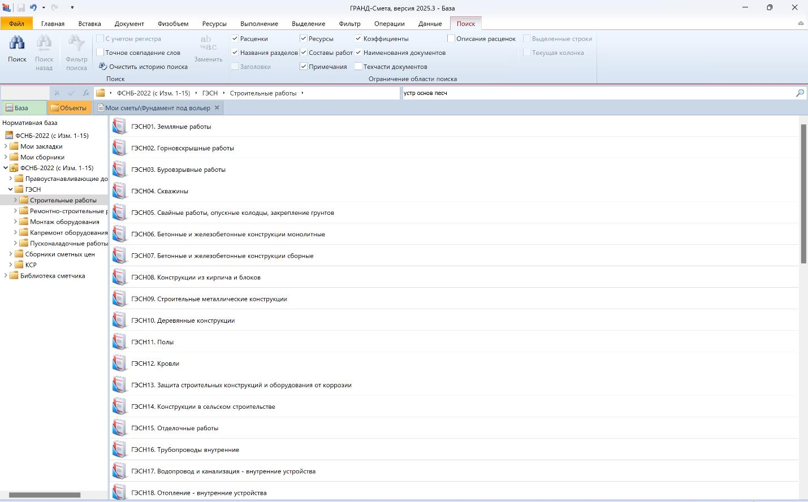
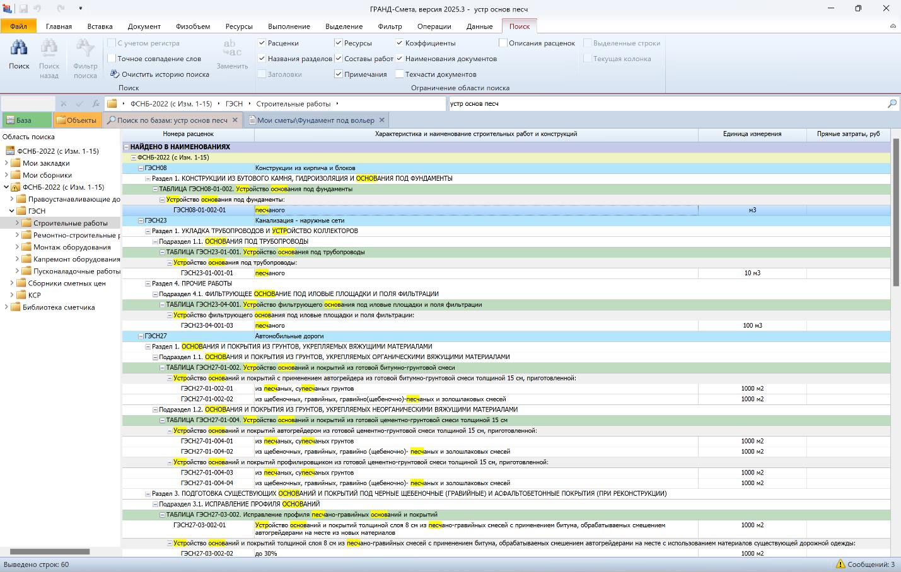
Песочка добавим? Конечно! :) Аналогично предыдущей расценке, но с небольшой корректировочкой:
Вкладка БАЗА – ФСНБ. Федеральные сметные цены материалы, изделия… – в строке поиска сокращенно вводим что ищем – Enter – из представленного списка выбираем нам подходящее – наводим курсор мыши – клик правой кнопкой – вставить в смету
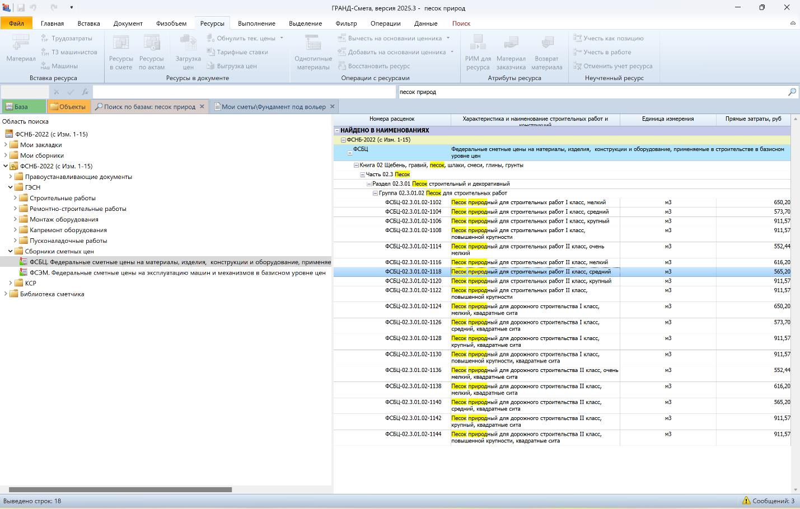
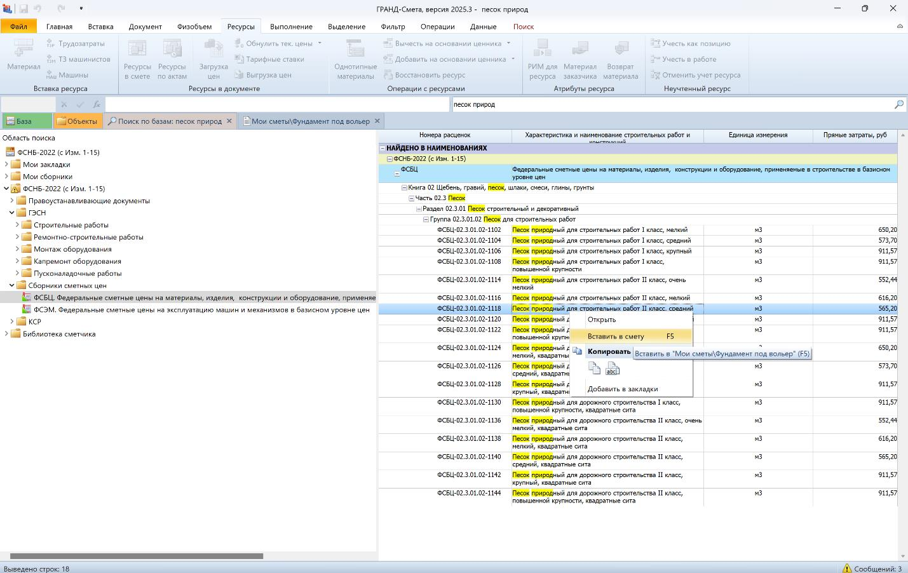
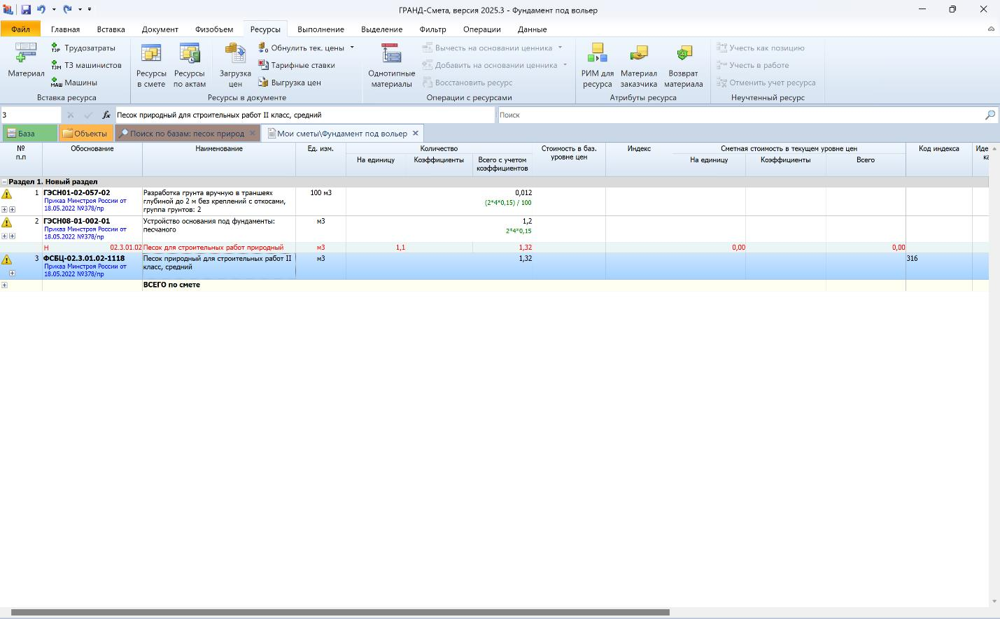
Расценки вставили, но суммы по смете не видно. Как так-то? — спросите вы.
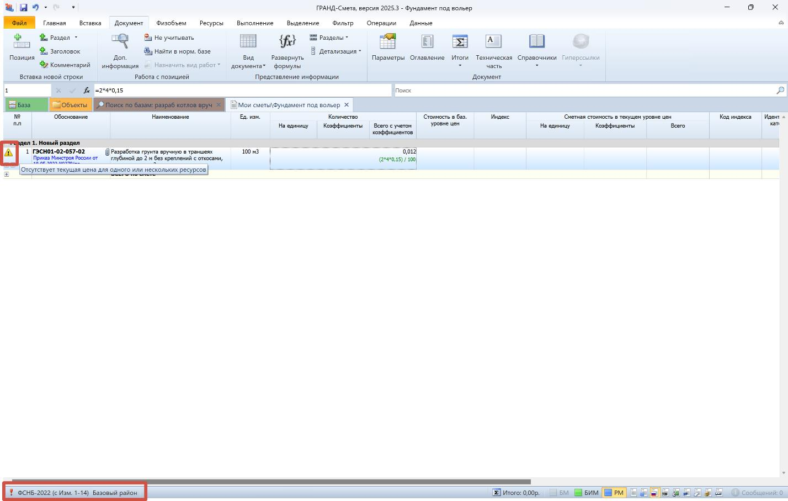
Сейчас приведем базу в соответствие и можно будет подгрузить текущие цены!
Давайте закрепим пройденный материал урока и выполним задание на внесение объемов из ВОР в расценки в соответствии с установленной единицей измерения.
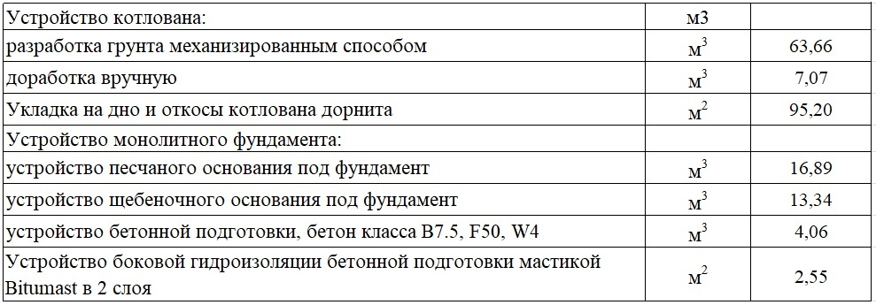